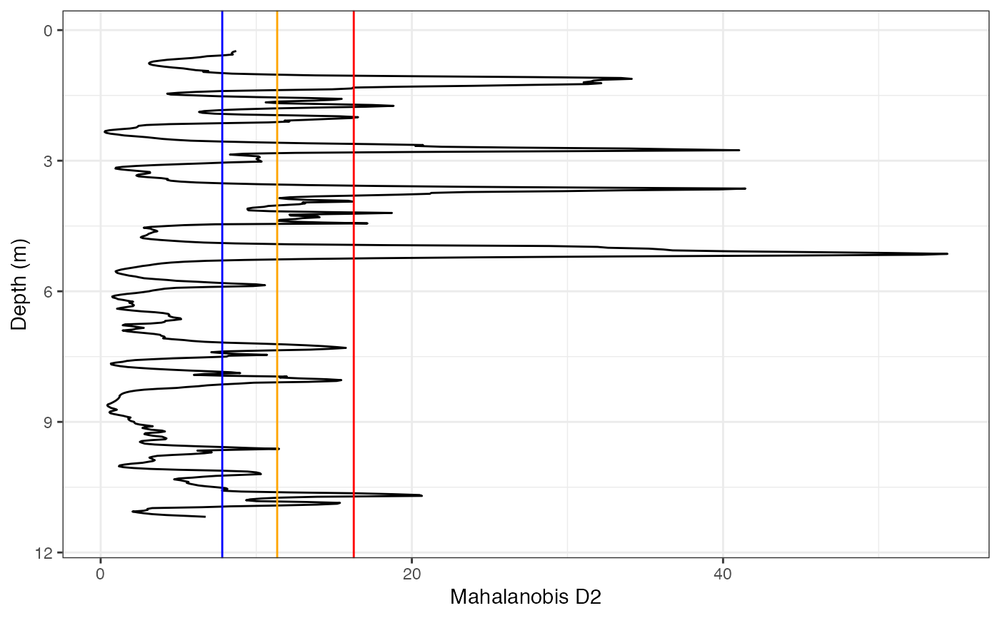

Calculates the T2-statistic and corresponding effect size (Mahalanobis distance) for a perforation log with more than 1 variable. The coefficient is used to find layer boundaries in a perforation log.
T2_stat(x, k = 50)
| x | A data frame containing the depth of perforation in the first column, and the variables of interest in the rest of the columns, for a CPTu test: point resistance (qc), sleeve friction (fs), and pore-water pressure (u) |
|---|---|
| k | The window length for the number of data points to include in the calculation of T2-statistic. Always and even (par) number |
ggplot and plotly objects showing the Mahalanobis D2 statistic and lines marking the critical values at 0.95, 0.99, and 0.999, and suggested boundaries
The example data given is intended to show the structure needed for input data. The user should follow this structure, which in general corresponds with a data frame with a sequence in the first column and the observed/measured values in the second, third, and fourth columns
Davis, J. C. (2002). Statistical and Data Analysis in Geology. 3rd ed. John Wiley & Sons.
T2_stat(CPTu_data, k = 50)#> Warning: longer object length is not a multiple of shorter object length#> Warning: longer object length is not a multiple of shorter object length#> Warning: longer object length is not a multiple of shorter object length#> $GGPLOT#> #> $PLOTLY #> #> $Bounds.95 #> [1] 0.56 1.12 1.22 1.58 1.74 2.00 2.10 2.64 2.76 2.92 3.02 3.64 #> [13] 3.94 3.98 4.20 4.30 4.44 5.14 5.86 7.30 7.46 7.88 7.96 8.04 #> [25] 9.62 10.20 10.54 10.70 10.86 #> #> $Bounds.99 #> [1] 1.12 1.22 1.58 1.74 2.00 2.10 2.64 2.76 3.64 3.94 3.98 4.20 #> [13] 4.30 4.44 5.14 7.30 7.96 8.04 9.62 10.70 10.86 #> #> $Bounds.999 #> [1] 1.12 1.22 1.74 2.00 2.64 2.76 3.64 4.20 4.44 5.14 10.70 #>